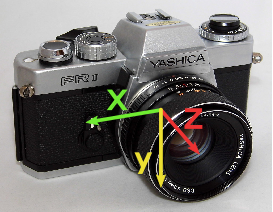
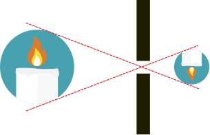
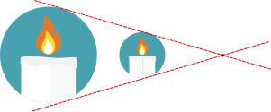
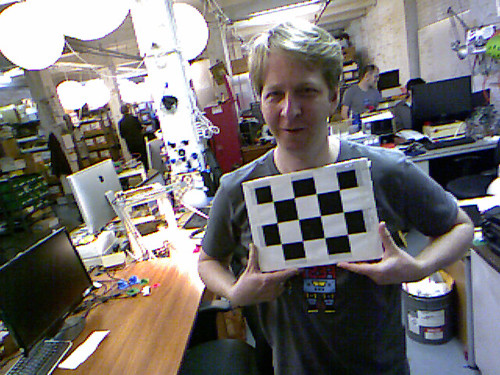

1 什麼是相機標定
影響相機成像過程的因素有很多。一束光先是從光源出發，落在物體表面。而後它又經過物體表面的反射，進入相機，穿過鏡頭和光圈，最後落在感光芯片上。這個過程中，物體的形狀、方位、焦距、光圈數、感光芯片的大小、感光單元的分佈間距……許許多多參數會對最終的成像產生影響。
相機標定是求解相機參數的過程。相機的參數又分爲內參和外參。 內參包括相機的焦距、感光單元的間距、鏡頭畸變係數等。外參是相機相對於其它外部事物的位姿。一旦外參和內參是確定的，那我們就能確切地知道外部世界的某一個點發出的光線會落在圖像的哪個位置。因此，許多任務，例如雙目視覺、增強現實、立體匹配、單目3D目標檢測……都需要使用準確的相機內外參。
內外參常常是無法直接精確測得的。我們無法直接用尺子測量鏡頭到感光芯片的距離，更無法用普通工具測量芯片上感光單元之間的間距（這是微米級別的尺寸），而鏡頭的畸變模型還帶來更多更復雜的因素。要如何精確地得出這些數值呢？
首先，我們要建立相機的數學模型。 本文介紹常見的針孔相機模型。它用小孔成像來近似相機的成像過程。理解針孔相機模型，有助於學習其它相機模型，例如魚眼相機模型和線陣相機模型。
相機模型建立後，我們用相機拍攝特定標定物，根據標定物的參數及成像效果，可以間接推斷出相機的各項參數。
2 相機坐標系和世界坐標系

常見的相機坐標系如上面的圖所示。相機鏡頭朝前時，x軸朝右，y軸朝下，z軸朝前。
當然，你也可以採用不一樣的坐標系設定。坐標系的定義不同不會影響相機模型和參數標定過程的數學本質，標定的方法也是一樣的。但採取”另類”的設計有時會帶來一些不必要的麻煩。
與相機坐標系相對的是世界坐標系。世界坐標系的定義根據問題的不同而不同。它可以定義在某張標定板上，也可以定義在某個傳感器上。某點世界坐標系與相機坐標系上的坐標可以通過剛性變換來轉換。假設 \(\mathbf p_w\) 是世界坐標系下的坐標，\(\mathbf p_c\) 是相機坐標系下的坐標，那麼存在旋轉矩陣 \(\mathbf R\) 和平移向量 \(\mathbf t\) 使得
\[ \mathbf p_c= \mathbf R\mathbf p_w + \mathbf t \]
這裏的向量 \(\mathbf t=(t_x, t_y, t_z)^T\)。旋轉矩陣 \(\mathbf R\) 是三行三列的方陣。
解釋一下旋轉矩陣的計算。假設旋轉的過程是繞着z軸旋轉角度 \(\gamma\)，再繞y軸旋轉角度 \(\beta\)，再繞x軸旋轉角度 \(\alpha\)，那麼旋轉矩陣
\[ \mathbf R(\alpha, \beta, \gamma) = \left(\begin{array}{ccc} 1 & 0 & 0 \\ 0 & \cos \alpha & -\sin \alpha \\ 0 & \sin \alpha & \cos \alpha \end{array}\right) \left(\begin{array}{ccc} \cos \beta & 0 & \sin \beta \\ 0 & 1 & 0 \\ -\sin \beta & 0 & \cos \beta \end{array}\right) \left(\begin{array}{ccc} \cos \gamma & -\sin \gamma & 0\\ \sin \gamma & \cos\gamma & 0 \\ 0 & 0 & 1 \end{array}\right). \]
所以，旋轉矩陣可以由3個旋轉角度決定。這三個角度被稱爲歐拉角。
注意：旋轉角度、旋轉軸的順序不是唯一的。比如，也可以先繞 \(x\) 軸旋轉一個角度，再繞 \(z\) 軸旋轉，再繞 \(x\) 軸旋轉。在具體的問題中，要注意歐拉角的定義。
總而言之，六元組 \((t_x, t_y, t_z, \alpha, \beta, \gamma)\) 決定了參考坐標系，它們構成相機的外參。
3 針孔相機模型
3.1 透視投影
接下來介紹針孔相機模型。

我們忽略光線所具有的”波”的性質。我們僅需知道，“光是沿直線傳播的”。那麼，如上圖所示物體上發出的光只能經過小孔落在成像平面上。經過小孔，上方的光線落在下面，下方的光線落在上面。小孔成像所成的是倒立的實像。
雖然小孔成像在物理上是這樣解釋的，但是，計算機從業者卻常用另外的圖示來表達這一過程。

在上圖中，你可以看到對象物體和所成像都畫在小孔（又被稱爲主點）的同一側，並且直接繪製正像。你可能會問，這種事在物理上怎麼可能發生呢？
這在物理上當然是不合理的。之所以計算機的從業者這樣繪圖，只是因爲方便。這種畫法因爲能節省作圖空間，且避免了麻煩的坐標系旋轉而十分常見。通過避免坐標旋轉，可以簡化數學運算。
小孔成像的原理可以很容易用數學公式描述。假設相機坐標系中有一點 \(\mathbf p_c=(x_c, y_c, z_c)^T\)，這個點發出的光線經過了小孔，那麼可以通過如下公式求得成像點的位置：
\[ x = \frac{x_c f}{z_c}, y = \frac{y_c f}{z_c}. \]
其中 \(f\) 是小孔到成像平面的距離。下面的圖或許有助於你理解該公式。從圖中我們可以看到，成像點總是位於 \(z = f\) 的平面上，並且與原點 \(\mathbf o\) 和被成像點 \(\mathbf p_c\) 共線。因此，我們只須求出直線 \(\mathbf o \mathbf p_c\) 與成像平面的交點，也就得到了成像點的坐標。
在計算機視覺應用中，圖像會被離散化爲以像素爲單位的矩陣。要將 \(x\) 和 \(y\) 坐標同像素的行列對應起來，還需要在成像公式中加入縮放係數和偏移量：
\[ c = \frac{x_c f}{z_c s_x} + c_x, r = \frac{y_c f}{z_c s_y} + c_y. \]
這裏 \(s_x\) 和 \(s_y\) 就是感光芯片陣列在橫向和縱向上的間距。 這樣，通過這個公式，我們就知道點 \(\mathbf p_c\) 落在圖像 \(r\) 行 \(c\) 列的位置。
令 \(f_x = f / s_x\)，以及 \(f_y = f / s_y\)，則有
\[ c = \frac{x_c f_x}{z_c} + c_x, r = \frac{y_c f_y}{z_c} + c_y. \]
對於市面上的相機，一般都有 \(s_x=s_y\)，於是 \(f_x = f_y\)。一種 \(s_x\neq s_y\) 的特殊情況（見文獻1 71頁的2.3.1節），是採集卡的時鐘頻率與攝像機時鐘頻率不一致從而導致像素橫縱比率改變。這種情形比較少見。
這兩個公式可以轉寫爲方便的矩陣乘法的形式：
\[ (c',r', z_c)^T = \left( \begin{array}{ccc} f_x & 0 & c_x\\ 0 & f_y & c_y\\ 0 & 0 & 1 \end{array} \right) \left( \begin{array}{c} x_c\\ y_c\\ z_c \\ \end{array} \right) = \mathbf P \left( \begin{array}{c} x_c\\ y_c\\ z_c \\ \end{array} \right) \]
其中 \(\mathbf P\) 被稱爲投影矩陣，\(c'\)、\(r'\) 是橫縱坐標的分子，而 \(z_c\) 是它們公共的分母：
\[ c = \frac{c'}{z_c} \]
\[ r = \frac{r'}{z_c} \]
結合內參和外參，則成像點的計算公式是：
\[ s\left( \begin{array}{c} c\\r\\1 \end{array} \right) = \mathbf P(\mathbf R\mathbf p_w + \mathbf T) = \mathbf P (\mathbf r_1, \mathbf r_2, \mathbf r_3, \mathbf t) \left( \begin{array}{c} x_w\\ y_w\\ z_w\\ 1 \end{array} \right) \tag{1} \]
其中 \(r_i\) 是矩陣 \(\mathbf R\) 的第i列。
3.2 鏡頭畸變
對於大多數鏡頭而言，它們的畸變都可以被近似爲徑向畸變。
徑向畸變：
\[ \left( \begin{array}{c} u' \\ v' \end{array} \right) = \frac{2}{1 + \sqrt{1 - 4 \kappa (u^2 + v^2)}} \left( \begin{array}{c} u \\ v \end{array} \right) \]
注意：這是Halcon庫採用的畸變公式。不同的程序庫或文獻可能使用不同的畸變公式。例如，OpenCV有一套更復雜的畸變描述方式。 它們的共同特徵是用非線性函數來表示畸變。
昂貴的工業相機可以使用簡單的畸變模型，而便宜的網絡相機可能需要使用複雜的畸變模型。
4 標定
標定就是求解相機內外參的過程。對於針孔相機模型，我們有內參數 \((\kappa, f_x, f_y, c_x, c_y)\)，外參數 \((\alpha, \beta, \gamma, t_x, t_y, t_z)\)。 標定時我們需要拍攝多張標定板的圖像。雖然相機的內參是固定的，但每次拍攝，標定板的位置都不一樣，所以每次拍攝都產生一組待解的外參。總的待解參數的量是 \(\text{內參數量}+\text{外參數量}\times\text{圖片數量}\)。
4.1 標定工具
我們使用張氏標定法來完成標定。需要使用標定板這一工具。

標定板是黑白相間的方格子，這種被稱爲”棋盤格標定板”。材質有A4紙的、鋁合金的，也有玻璃制的。材質決定了標定板的精度，也影響標定精度。如果你的應用場景對標定精度的要求很高，你可能需要選擇一種昂貴的材料，而不是簡單地用A4紙打印一張標定板。
我們檢測的是棋盤格標定板上的角點。角點的個數最好是奇數個x偶數個。圖案最好不是旋轉對稱的。
也有圓形圖案的標定板。但我更喜歡棋盤格圖案，因爲圓形的投影中心不一定是圓形的中心，這會給檢測帶來麻煩。另外，角點檢測也比邊緣檢測準確，後者容易受光照影響而發生偏移。橢圓擬合的準確性依賴於邊緣檢測，因此拍照時必須控制好光照。
4.2 標定流程
標定時，我們從多個方位拍攝標定板，產生若干圖像（例如15張，30張）。
拍好照片後，可以使用廣爲人知、影響深遠的張氏標定法2求解相機內外參。
4.3 內外參的閉式解
先從簡單的情況着手——假設不存在畸變，此時問題有閉式解。
我們需要做的只是求解線性變換：
\[ s\left( \begin{array}{c} c\\r\\1 \end{array} \right) = \mathbf P(\mathbf R\mathbf p_w + \mathbf T) = P (\mathbf r_1, \mathbf r_2, \mathbf r_3, \mathbf t) \left( \begin{array}{c} x_w\\ y_w\\ z_w\\ 1 \end{array} \right) \]
注意標定板是平面，所以 \(z_w = 0\)，上式化簡爲
\[ s\left( \begin{array}{c} c\\r\\1 \end{array} \right) = \mathbf P(\mathbf R\mathbf p_w + \mathbf T) = \mathbf P (\mathbf r_1, \mathbf r_2, \mathbf t) \left( \begin{array}{c} x_w\\ y_w\\ 1 \end{array} \right) \]
令 \(\mathbf H = \mathbf P(\mathbf r_1, \mathbf r_2 , \mathbf t)\)，上式可以寫爲 \(\tilde{\mathbf m} = \mathbf H \tilde{\mathbf M}\)，其中 \(\tilde{\mathbf m}\) 表示點在圖像上的投影的齊次坐標，\(\tilde{\mathbf M}\) 表示點在標定板上的坐標。 只要標定板上的點足夠多，那麼就可以用最小二乘法求得 \(\mathbf H\)。
又令 \(\mathbf H = \left[\mathbf h_1, \mathbf h_2, \mathbf h_3\right]\)，其中 \(\mathbf h_i\) 是其第i列的三維向量。
由於R是單位正交陣，所以 \(r_1\), \(r_2\) 是相互正交的單位向量，故而
\[ \mathbf h_1^T \mathbf P^{-T} \mathbf P^{-1} \mathbf h_2 = 0 \tag{2} \]
\[ \mathbf h_1^T \mathbf P^{-T} \mathbf P^{-1} \mathbf h_1 = \mathbf h_2^T \mathbf P^{-T} \mathbf P^{-1} \mathbf h_2 \tag{3} \]
再令
\[ \mathbf B = \lambda \mathbf P^{-T} \mathbf P^{-1} \equiv \left( \begin{array}{ccc} B_{11} & B_{12} & B_{13} \\ B_{12} & B_{22} & B_{23} \\ B_{13} & B_{23} & B_{33} \\ \end{array}\right) \]
其中 \(\lambda\) 是一個任意的縮放係數。\(\mathbf B\) 是一個對稱矩陣。注意到由於本文對 \(\mathbf P\) 的定義，\(B_{12}=0\)。 所以 \(\mathbf B\) 可以由六維向量 \(\mathbf b = \left(B_{11}, B_{22}, B_{13}, B_{23}, B_{33}\right)^T\) 決定。
設 \(\mathbf h_i = (h_{i1}, h_{i2}, h_{i3})^T\) 是 \(\mathbf H\) 的第i列，那麼，
\[ \mathbf h_i^T \mathbf{B} \mathbf h_j = \mathbf v_{ij}^T \mathbf b, \]
其中
\[ \mathbf v_{ij} = (h_{i1}h_{j1}, h_{i2}h_{j2}, h_{i3}h_{j1} + h_{i1} h _{j3}, h_{i3}h_{j2} + h_{i2}h_{j3}, h_{i3}h_{j3}) \]
於是，公式 (2)、(3) 中的約束可以轉化爲如下線性約束：
\[ \left(\begin{array}{c} \mathbf v_{12}^T \\ (\mathbf v_{11} - \mathbf v_{12}) ^T \end{array} \right) \mathbf b = \mathbf 0 \]
假設我們拍攝了n張圖片，那麼將n個這樣的公式堆疊起來，就得到
\[ \mathbf V \mathbf b = \mathbf 0 \]
\(\mathbf V\) 是由 \(\mathbf H\) 決定的，可以通過單張圖像求得，而 \(\mathbf b\) 是由相機的內參決定的。我們要求得 \(\mathbf b\)。可以用著名的線性最小二乘法求解這個問題。只要數據點足夠多，則這個問題有閉式解。
一旦 \(\mathbf b\) 得解，那麼我們可以恢復出相機的內參。可以證明
\[ \begin{aligned} c_y &= - B_{11} B_{23} / (B_{11}B_{22}) \\ \lambda &= B_{33} - (B_{13}^2 + c_y (- B_{11}B_{23})) / B_{11} \\ f_x &= \sqrt{\lambda / B_{11}} \\ f_y &= \sqrt{\lambda B_{11} / (B_{11}B_{22})} \\ c_x &= - B_{13} \alpha^2 / \lambda \end{aligned} \]
接下來，各張圖像的外參也可依次求得。
\[ \mathbf r_1 = \lambda \mathbf A^{-1}\mathbf h_1, \mathbf r_2 = \lambda \mathbf A^{-1} \mathbf h_2 , \mathbf r_3 = \mathbf r_1 \times \mathbf r_2, \mathbf t = \lambda \mathbf A ^{-1} \mathbf h_3 \]
注意，這裏求解出的旋轉矩陣可能不是單位正交矩陣，需要用SVD分解的方法將其轉變爲單位正交陣。
總結一下本小節的內容：假設相機沒有畸變，那麼可以先求得每張圖像對應的單應性變換矩陣 \(\mathbf H\)，然後，可以依次求得相機內外參。這種情況下，內外參數的解是閉式解。
4.4 求相機的畸變係數
上一節，我們求解了相機的內外參。但這種解法存在幾個問題：
- 我們假設相機沒有畸變；
- 我們通過最小二乘來求解問題。但這裏應用的最小二乘所最小化的距離度量沒有實際的物理意義。
所以，張氏標定法用上一節所介紹的方法求得的解作爲初始解，用LM算法繼續優化該解。目標函數爲：
\[ \sum_{i} \sum_{j} \left\| m_{ij} - \phi(\mathbf P, \mathbf R_i \mathbf t_i, \mathbf M_j)\right\| ^2 \]
其中 \(\phi\) 是考慮了相機畸變的非線性投影函數，解決了問題1。 新的目標函數旨在最小化投影誤差，是具有實際物理意義的，解決了問題2。
5 思考題
一張標定板最少應該有多少個點？至少應當拍攝多少張標定板圖像？
標定板的點數至少應該使得 \(H\) 可解。而三維方陣 \(H\) 作爲單應性變換，有8個自由度。 標定板的每個點都可以提供兩行投影方程，因此如果有四個點，則理論上 \(H\) 可解。因爲 \(\mathbf V\) 是 \(2n\) 行的矩陣，而內參（不包括畸變係數，分別是 \(f_x\)、\(f_y\)、\(c_x\)、\(c_y\)）有4個，故而理論上圖片張數 \(n\geq 2\) 時問題可解。
當然，實際上爲了獲得較好的精度，我們會適當取多一些點，多幾張圖片。實踐中，如果點數、圖片數不夠多，解的精度是很差的。
6 附錄
6.1 標定算法的Python實現
OpenCV/Halcon等庫提供了標定用的函數，可以非常方便的用Python或者C++調用。儘管如此，不同的程序庫使用的相機模型有略微的差別。只有真正瞭解相機模型，理解每一個參數，才能正確地使用它們。
參考Halcon的資料3，我用Python實現了一份標定算法。經測試，標定結果同Halcon的標定算法所產生的結果一致（誤差小於0.01）。這份代碼對於理解Halcon的相機模型、標定原理可能有幫助，僅供參考。
import numpy as np
import cv2 as cv
sin, cos = np.sin, np.cos
# 旋轉矩陣分解爲歐拉角
# 該函數只能得到其中一種特解
# 參考：https://www.geometrictools.com/Documentation/EulerAngles.pdf
def rotate_matrix_factorize(mat):
assert(mat.shape == (3, 3))
eps = np.finfo(mat.dtype).eps
r00, r01, r02, r10, r11, r12, r20, r21, r22 = mat.flatten()
if np.abs(r02 - 1) < eps:
return 0, np.pi / 2, np.arctan2(r10, r11)
elif np.abs(r01 + 1) < eps:
return 0, -np.pi / 2, np.arctan2(r10, r11)
else:
return np.arctan2(-r12, r22), np.arcsin(r02), np.arctan2(-r01, r00)
def estimate_outer_params(cx, cy, fx, fy, mat_h):
mat_m = np.matrix([[fx, 0, cx],
[0, fy, cy],
[0, 0, 1]])
lamb = 1 / np.linalg.norm(np.matmul(mat_m.I, mat_h[:, 0]))
r1 = lamb * np.matmul(mat_m.I, mat_h[:, 0])
r2 = lamb * np.matmul(mat_m.I, mat_h[:, 1])
r3 = np.cross(r1, r2)
mat_r = np.array([r1, r2, r3]).reshape((3, 3)).T
u, s, vh = np.linalg.svd(mat_r)
mat_r = np.matmul(np.matmul(u, np.eye(3, 3)), vh)
alpha, beta, gamma = rotate_matrix_factorize(mat_r)
t = np.array(lamb * np.matmul(mat_m.I, mat_h[:, 2].reshape(3, 1)))
return alpha, beta, gamma, t
def predict1(points, cx, cy, sx, sy, f, kappa, outer_params):
scene_num = outer_params.shape[0]
pt_num = points.shape[0]
assert(outer_params.shape == (scene_num, 6))
assert(points.shape == (pt_num, 2))
points_transpose = points.T
points_camera = np.empty((3, pt_num * scene_num))
for i in range(scene_num):
alpha, beta, gamma, tx, ty, tz = outer_params[i]
points_rotate_z = np.matmul([
[np.cos(gamma), -np.sin(gamma)],
[np.sin(gamma), np.cos(gamma)]
], points_transpose)
assert(points_rotate_z.shape == (2, pt_num))
points_rotate_y = np.matmul([
[np.cos(beta), 0],
[0, 1],
[-np.sin(beta), 0]
], points_rotate_z)
assert(points_rotate_y.shape == (3, pt_num))
points_rotate_x = np.matmul([
[1, 0, 0],
[0, np.cos(alpha), -np.sin(alpha)],
[0, np.sin(alpha), np.cos(alpha)]
], points_rotate_y)
points_camera[:, i * pt_num: (i + 1) * pt_num] = points_rotate_x + [[tx], [ty], [tz]]
points_image_plane = points_camera[:2, :] / points_camera[2, :] * f
assert(points_image_plane.shape == (2, pt_num * scene_num))
r2 = np.sum(np.power(points_image_plane, 2), axis=0)
assert(r2.shape == (pt_num * scene_num,))
ratio = 2 / (1 + np.sqrt(1 - 4 * kappa * r2))
points_distort = ratio * points_image_plane
assert(points_distort.shape == (2, pt_num * scene_num))
r2d = np.sum(np.power(points_distort, 2), axis=0)
assert(r2d.shape == (pt_num * scene_num,))
points_image = [[1 / sx], [1 / sy]] * points_distort + [[cx], [cy]]
assert(points_image.shape == (2, pt_num * scene_num))
jac = np.empty((2 * pt_num * scene_num, 5 + scene_num * 6))
jac[:pt_num * scene_num, 0] = 1
jac[pt_num * scene_num:, 0] = 0
jac[:pt_num * scene_num, 1] = 0
jac[pt_num * scene_num:, 1] = 1
jac[:pt_num * scene_num, 2] = -points_distort[0, :] / sx ** 2
jac[pt_num * scene_num:, 2] = 0
d_ud_u = 2 * kappa * points_distort[0, :] ** 2 / np.sqrt(1 - 4 * kappa * r2) + ratio
d_ud_v = 2 * kappa * points_image_plane[0, :] * points_distort[1, :] ** 2 / points_image_plane[1, :] / np.sqrt(1 - 4 * kappa * r2)
d_vd_u = d_ud_v
d_vd_v = 2 * kappa * points_distort[1, :] ** 2 / np.sqrt(1 - 4 * kappa * r2) + ratio
jac[:pt_num * scene_num, 3] = (1 / sx * (d_ud_u * points_camera[0, :] / points_camera[2, :]
+ d_ud_v * points_camera[1, :] / points_camera[2, :])).flatten()
jac[pt_num * scene_num:, 3] = (1 / sy * (d_vd_u * points_camera[0, :] / points_camera[2, :]
+ d_vd_v * points_camera[1, :] / points_camera[2, :])).flatten()
jac[:pt_num * scene_num, 4] = (1 / sx * points_image_plane[0] / np.sqrt(1 - 4 * kappa * r2) * r2d).flatten()
jac[pt_num * scene_num:, 4] = (1 / sy * points_image_plane[1] / np.sqrt(1 - 4 * kappa * r2) * r2d).flatten()
d_c_xc = 1 / sx * d_ud_u * f / points_camera[2, :]
d_c_yc = 1 / sx * d_ud_v * f / points_camera[2, :]
d_c_zc = -1 / sx * (d_ud_u * f * points_camera[0, :] / points_camera[2, :] ** 2
+ d_ud_v * f * points_camera[1, :] / points_camera[2, :] ** 2)
d_r_xc = 1 / sy * d_vd_u * f / points_camera[2, :]
d_r_yc = 1 / sy * d_vd_v * f / points_camera[2, :]
d_r_zc = -1 / sy * (d_vd_u * f * points_camera[0, :] / points_camera[2, :] ** 2
+ d_vd_v * f * points_camera[1, :] / points_camera[2, :] ** 2)
for scene in range(scene_num):
d_c_xc_slice = d_c_xc[scene * pt_num:(scene + 1) * pt_num]
d_c_yc_slice = d_c_yc[scene * pt_num:(scene + 1) * pt_num]
d_c_zc_slice = d_c_zc[scene * pt_num:(scene + 1) * pt_num]
d_r_xc_slice = d_r_xc[scene * pt_num:(scene + 1) * pt_num]
d_r_yc_slice = d_r_yc[scene * pt_num:(scene + 1) * pt_num]
d_r_zc_slice = d_r_zc[scene * pt_num:(scene + 1) * pt_num]
jac_slice1 = jac[scene * pt_num:(scene + 1) * pt_num, :]
jac_slice2 = jac[(scene_num + scene) * pt_num:(scene_num + scene + 1) * pt_num, :]
alpha, beta, gamma, _, _, _ = outer_params[scene]
d_xc_alpha = 0
d_xc_beta = -sin(beta) * cos(gamma) * points_transpose[0, :] \
+ sin(beta) * sin(gamma) * points_transpose[1, :]
d_xc_gamma = -cos(beta) * sin(gamma) * points_transpose[0, :] \
- cos(beta) * cos(gamma) * points_transpose[1, :]
d_yc_alpha = points_transpose[0, :] * (-sin(alpha) * sin(gamma) + cos(gamma) * cos(alpha) * sin(beta)) \
+ points_transpose[1, :] * (-sin(alpha) * cos(gamma) - cos(alpha) * sin(beta) * sin(gamma))
d_yc_beta = points_transpose[0, :] * cos(gamma) * sin(alpha) * cos(beta) \
- points_transpose[1, :] * sin(alpha) * cos(beta) * sin(gamma)
d_yc_gamma = points_transpose[0, :] * (cos(alpha) * cos(gamma) - sin(gamma) * sin(alpha) * sin(beta)) \
+ points_transpose[1, :] * (-cos(alpha) * sin(gamma) - sin(alpha) * sin(beta) * cos(gamma))
d_zc_alpha = points_transpose[0, :] * (sin(alpha) * cos(gamma) * sin(beta) + cos(alpha) * sin(gamma)) \
+ points_transpose[1, :] * (-sin(alpha) * sin(beta) * sin(gamma) + cos(gamma) * cos(alpha))
d_zc_beta = points_transpose[0, :] * -cos(alpha) * cos(gamma) * cos(beta) \
+ points_transpose[1, :] * cos(alpha) * cos(beta) * sin(gamma)
d_zc_gamma = points_transpose[0, :] * (cos(alpha) * sin(gamma) * sin(beta) + sin(alpha) * cos(gamma)) \
+ points_transpose[1, :] * (cos(alpha) * sin(beta) * cos(gamma) - sin(gamma) * sin(alpha))
# alpha
jac_slice1[:, 5 + scene * 6] = d_c_xc_slice * d_xc_alpha + d_c_yc_slice * d_yc_alpha + d_c_zc_slice * d_zc_alpha
jac_slice2[:, 5 + scene * 6] = d_r_xc_slice * d_xc_alpha + d_r_yc_slice * d_yc_alpha + d_r_zc_slice * d_zc_alpha
# beta
jac_slice1[:, 6 + scene * 6] = d_c_xc_slice * d_xc_beta + d_c_yc_slice * d_yc_beta + d_c_zc_slice * d_zc_beta
jac_slice2[:, 6 + scene * 6] = d_r_xc_slice * d_xc_beta + d_r_yc_slice * d_yc_beta + d_r_zc_slice * d_zc_beta
# gamma
jac_slice1[:, 7 + scene * 6] = d_c_xc_slice * d_xc_gamma + d_c_yc_slice * d_yc_gamma + d_c_zc_slice * d_zc_gamma
jac_slice2[:, 7 + scene * 6] = d_r_xc_slice * d_xc_gamma + d_r_yc_slice * d_yc_gamma + d_r_zc_slice * d_zc_gamma
# tx
jac_slice1[:, 8 + scene * 6] = d_c_xc_slice
jac_slice2[:, 8 + scene * 6] = d_r_xc_slice
# ty
jac_slice1[:, 9 + scene * 6] = d_c_yc_slice
jac_slice2[:, 9 + scene * 6] = d_r_yc_slice
# tz
jac_slice1[:, 10 + scene * 6] = d_c_zc_slice
jac_slice2[:, 10 + scene * 6] = d_r_zc_slice
return points_image, jac
def calibrate(grids, params):
pattern_size = params['pattern size']
cell_width = params['cell width']
image_count = grids.shape[0]
# 計算世界坐標系中的標定板坐標
grid_x = (np.arange(pattern_size[0] * pattern_size[1]) % pattern_size[0]) * cell_width
grid_y = np.asarray(np.arange(pattern_size[0] * pattern_size[1]) / pattern_size[0], np.int) * cell_width
grid_world = np.empty((pattern_size[0] * pattern_size[1], 2))
grid_world[:, 0] = grid_x
grid_world[:, 1] = grid_y
# 提取內參初始值
obj_points = np.float32(np.tile(np.hstack((grid_world, np.zeros((grid_world.shape[0], 1)))), (image_count, 1)))\
.reshape(image_count, pattern_size[0] * pattern_size[1], 3)
camera_matrix = np.array(cv.initCameraMatrix2D(
obj_points,
np.float32(grids),
(1280, 1024)
))
fx, _, cx, _, fy, cy, _, _, _ = camera_matrix.flatten()
sy = 4.8e-3
f = fy * sy
sx = f / fx
kappa = 0
outer_params = np.empty((image_count, 6))
for i in range(image_count):
mat_h, _ = cv.findHomography(obj_points[i], grids[i])
alpha, beta, gamma, t = estimate_outer_params(cx, cy, f / sx, f / sy, mat_h)
outer_params[i, :] = [alpha, beta, gamma, t[0], t[1], t[2]]
lamb = 100
g1 = 0.1
g2 = 1.1
i1 = 1e-1
i2 = 0.99
mat_i = np.eye(5 + 6 * image_count)
for i in range(100):
points_predict, jac = predict1(grid_world, cx, cy, sx, sy, f, kappa, outer_params)
assert(points_predict.shape == (2, pattern_size[0] * pattern_size[1] * image_count))
delta = points_predict - grids.reshape(pattern_size[0] * pattern_size[1] * image_count, 2).T
assert(delta.shape == (2, pattern_size[0] * pattern_size[1] * image_count))
error = np.mean(np.sum(delta ** 2, axis=0))
print('平均誤差：', np.sqrt(error))
# 更新內外參
mat_a = np.matmul(jac.T, jac)
step = -np.matmul(np.mat(mat_a + lamb * mat_i).I,
np.matmul(jac.T, delta.reshape(pattern_size[0] * pattern_size[1] * image_count * 2, 1)))
assert(step.size == 5 + 6 * outer_params.shape[0])
step = np.array(step).flatten()
cx, cy, sx, f, kappa = np.array([cx, cy, sx, f, kappa]) + step[:5]
outer_params += step[5:].reshape(outer_params.shape[0], 6)
# 更新LM算法的參數
points_predict2, _ = predict1(grid_world, cx, cy, sx, sy, f, kappa, outer_params)
delta2 = points_predict2 - grids.reshape(pattern_size[0] * pattern_size[1] * image_count, 2).T
error2 = np.mean(np.sum(delta2 ** 2, axis=0))
points_predict3 = points_predict + np.matmul(jac, step.reshape(5 + 6 * image_count, 1))\
.reshape(2, pattern_size[0] * pattern_size[0] * image_count)
delta3 = points_predict3 - grids.reshape(pattern_size[0] * pattern_size[1] * image_count, 2).T
error3 = np.mean(np.sum(delta3 ** 2, axis=0))
p = (error - error2) / (error - error3)
lamb = g2 * lamb if p < i1 else \
lamb if i1 <= p < i2 else\
g1 * lamb
print(
'''用LM法優化得到：
cx: %f px;
cy: %f px;
sx: %f um;
sy: %f um;
f: %f mm;
kappa: %f 1/m^2;
''' % (cx, cy, sx * 1e3, sy * 1e3, f, kappa * 1e6)
)
def main():
# 初始參數
# 實際距離全部以毫米爲單位
params = {
'pattern size': (7, 7), # 標記圓的個數
'cell width': 25, # 標記點間距
'sx': 4.8e-3,
"sy": 4.8e-3
}
pattern_size = params['pattern size']
# 列出文件夾下的所有圖片
directory = './test_images_1'
files = []
import sys
import os
for file in os.listdir(directory):
path = os.path.join(directory, file)
if os.path.isfile(path) and path.endswith('.bmp'):
files.append(path)
if len(files) < 2:
print("至少需要兩份標定文件！", sys.stderr)
# 讀取圖片
imgs = []
for file in files:
imgs.append(cv.imread(file, cv.IMREAD_GRAYSCALE))
# 檢測圓點
grids = np.zeros((len(imgs), params['pattern size'][0] * params['pattern size'][1], 2))
# 從圖片提取圓點
for i, img in enumerate(imgs):
success, centers = cv.findCirclesGrid(img, pattern_size)
if not success:
return {
'success': False,
'msg': '標定板無法識別',
'error code 1': 123,
'error code 2': i
}
assert(centers.shape == (pattern_size[0] * pattern_size[1], 1, 2))
grids[i, :, :] = centers.reshape(pattern_size[0] * pattern_size[1], 2)
calibrate(grids, params)
if __name__ == '__main__':
main()6.2 版權信息
圖像：
- 圖1（相機坐標系）基於此圖修改而來。原圖許可證：CC BY 2.0。
- 圖2（針孔相機模型）和圖3（小孔成像的另一種表示法）基於此圖修改而來。原圖許可證：CC0 License。
- 圖5（桶形畸變）來自於此。許可詳情：CC BY-NC-ND 2.0。
- 圖6（手持3x4標定板的人）的來源與許可詳情見此。
參考文獻
CARSTEN STEGER, MARKUS ULRICH, CHRISTIAN WIEDEMANN. 機器視覺算法與應用[M]. 楊少榮, 譯, 吳迪靖, 譯, 段德山, 譯. 清華大學出版社.↩︎
ZHANG Z. A flexible new technique for camera calibration[J]. IEEE Transactions on Pattern Analysis and Machine Intelligence, 2000, 22(11): 1330–1334.↩︎
CARSTEN STEGER, MARKUS ULRICH, CHRISTIAN WIEDEMANN. 機器視覺算法與應用[M]. 楊少榮, 譯, 吳迪靖, 譯, 段德山, 譯. 清華大學出版社.↩︎